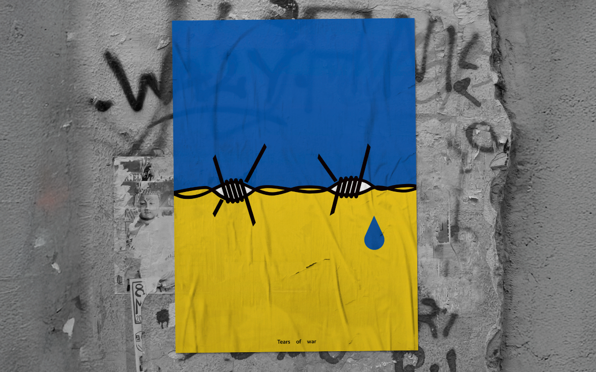

在烏克蘭的戰火中，看見了台灣相似的處境與危機。鐵網交織成一雙凝視的眼睛，落下一滴沈重眼淚，它源自烏克蘭人民的傷痛，也映照出台灣相似焦慮。願眼淚之後，是重生的堅韌。
In the fires of Ukraine, a mirror of Taiwan's own situation and vulnerability. Wire mesh weaves into a pair of watching eyes, from which falls a heavy tear — drawn from the pain of the Ukrainian people, reflecting the shared anxiety of Taiwan. May what follows the tears be the resilience of rebirth.
